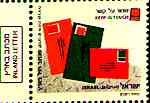

Briefmarken ohne Wertaufdruck |
 |
Während meiner Ferien auf der wunderschönen Côte d‘Azur in Frankreich wollte ich einem Freund in den USA eine Ansichtskarte schicken. Demzufolge ging ich zu einem Kiosk, um die nötige Briefmarke zu kaufen. Die höfliche Verkäuferin teilte mir mit, dass sie die passende Briefmarke nicht besitze, nur Briefmarken für die europäischen Länder. Ich habe dann gefragt, ob ich zwei oder mehrere solcher Marken auf meine Ansichtskarte kleben könnte. Die Antwort war, dass so etwas nicht erlaubt sei, weil die Briefmarken in ihrem Besitz nur für gewisse Richtungen vorgesehen sind. Die Situation hat sich auch an zwei anderen Kiosks wiederholt, so dass ich schlussendlich verzichtet habe und meine Ansichtskarte später aus der Schweiz schickte, mit den notwendigen Erklärungen.
Da mir diese Situation merkwürdig erschien, habe ich in Frankreich ein Heftchen mit 10 selbstklebenden Marken für Europa gekauft und habe begonnen, diese zu studieren. Graphisch ist die Marke interessant gestaltet, besonders durch das Spiel von Lichtkontrasten. Was den Inhalt betrifft, finde ich die Marke eher „che-guevaristisch" als ein französisches Freiheitssymbol. Besonders der Ausdruck der Augen lässt zu wünschen übrig. Es gibt den Eindruck einer Sonnenbrille oder, schlimmer, von dunklen Polizeibrillen der Tonton Makouts. Nur die senkrechten Kanten sind gezähnt, mit einer groben Zähnung, um den Eindruck einer normaler Briefmarke zu wecken.
Was diese Marke weniger üblich macht, ist die Abwesenheit des Wertaufdruckes. Auf der Rückseite des Heftchens ist es eindeutig geschrieben, dass es sich um 10 selbstklebende Briefmarken MIT UNBEGRENZTER GÜLTIGKEIT handelt. Dort werden auch die Richtungen präzisiert, und zwar gewisse europäische Länder und DOM-TOM.
Auf den ersten Blick scheint die Idee einfach und praktisch, aber das dauert nicht lange. Das offensichtliche Ziel einer Marke ohne Wert (in newspeak „mit unbegrenzter Gültigkeit" genannt) ist, die Kosten für das Material, das Drucken und die Verteilung von neuen Marken zu eliminieren, wenn sich der Preis des Postdienstes verändert. Es gibt im Grossen und Ganzen zwei Gründe für die Veränderung dieser Preise:
- Die Senkung der wirtschaftlichen Effizienz der Postverwaltungen, trotz dem (oder, genauer gesagt wegen dem) durch den Staat erhaltenen Monopol in den meisten Ländern der Welt. Die Ineffizienz bringt die Teuerung der erwähnten Dienste mit sich, demzufolge müssen die Posttarife steigen, was höhere Nennwerte der Briefmarken verursacht.
- Die Inflation. Die Gründe der Inflation zu analysieren übersteigt den Rahmen dieses Berichts. Es wäre zu bemerken, dass die wirtschaftliche Ineffizienz der staatlichen Monopole selbst eine Quelle für die Inflation ist. Die Inflation verursacht die Teuerung aller Dienste, einschliesslich der Postdienste, was zum Drucken von teureren Marken führt.
Die zusätzlichen Kosten für das Drucken und Verteilung der Marken wirken als eine Bremse, welche einigermassen die Ineffizienz und Inflation verhindern. Sogar die in früheren Zeiten oft verwendete Methode, die bestehenden Marken mit den neuen Nennwerten zu überdrucken hatte seine Kosten. Der Versuch, solche Kosten durch „ewig" gültige Briefmarken für immer zu eliminieren, verhindert diesen Schutzmechanismus und versteckt die ursprünglichen Probleme. Durch eine solche Massnahme wird dem Konsumenten ein Tropfen Sparmassnahmen in einem Ozean von Verlusten als eine besonders clevere Idee präsentiert.
Die Lösung von Problemen ist durch das Sprichwort aus der klassischen Medizin gezeigt: Contraria contrariis curantur, die Krankheiten muss man mit Mitteln, die diesen widerstehen, heilen. In unserem Fall würde das mit der Beseitigung des Staatsmonopoles in den Postdiensleistungen und das Zurückkehren zu einer Lage, die schon mal bestand, gelöst werden. Wer mehr darüber wissen will, sollte eventuell versuchen, auf einer Karte Deutschlands (1852-66) das Land mit dem Namen Thurn und Taxis finden.
Gewisse heutige Länder haben die ersten Schritte in die korrekte Richtung bereits gemacht. So z.B. wird Deutschland ab dem Jahr 2002 die exklusive Lizenz der Deutschen Post AG zurückziehen und auch anderen Firmen das recht Briefmarken zu drucken und zu verkaufen gewährleisten. Diese Unternehmen werden sich kaum erlauben können, wertlose Briefmarken anzubieten. Aber am wichtigsten ist, dass die privaten Konkurrenten der Post AG "drastisch sinkende Preise" nach Wegfall des Briefmonopols versprechen. Der Chef des Bundesverbandes Internationaler Express- und Kurierdienste, Herr Wojtek, meint: "Die Kunden können mit einer Preisreduktion von 30% rechnen."
| Bem. Vor kurzem habe ich ein Informationsblatt der französischen Postverwaltung bekommen. Ich habe zu meinem Erstaunen erfahren, dass die "ewige" Marke nicht die einzige ist. Eine neue Marke mit unbegrenzter Gültigkeit, und zwar die "Marianne" des 14. Juli (s. rechts) am 14. Juli 1997 herausgegeben wurde. Es ist nicht klar, ob die alte Marke zurückgezogen wird. Auf dem Blatt steht: "Die Briefmarke ohne Wertaufdruck mit permanenter Gültigkeit in roter Farbe ist für die Frankierung von Briefen bis zu 20 Gramm bestimmt. Sie kann für Frankreich, die französischen Überseeterritorien und -departements und den internationalen Verkehr, dessen Tarif dem Binnenverkehr entspricht, verwendet werden." Ich könnte nicht sagen, ob sich ihr Preis verändert hat. Könnten Sie es? |  |
Frankreich ist keine Ausnahme!
 |
 |
Die Briefmarken aus POLEN, mit "A", sind für das Innland. Diejenigen mit "B" (nicht gezeigt) sind zum örtlichen Gebrauch in den Städten. Die Briefmarken von ISRAEL sind für das Innland. (David aus Israel, besten Dank für die Marken und für die Auskunft!). |
.